AQS
AQS is a motion comic that gives Pakistan's water crisis a human face: a water spirit myth rooted in Balochistan's folklore, real research, and watching my own hometown run dry.
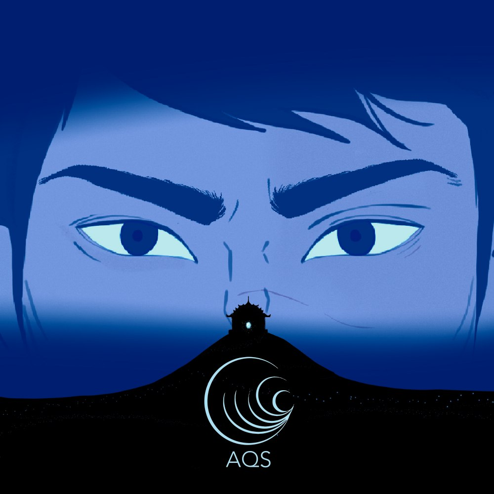
Watch the Film
AQS is a motion comic exploring Pakistan's water crisis through a speculative lens. It's inspired by the ongoing water shortages and the unavailability of Sui gas in Balochistan, Pakistan.
Viewers are urged to contribute in whatever way they can towards the environment, for a better and safer future. A few organizations that help: Alkhidmat Clean Water and charity: water.
Building Shahmir
Shahmir needed to read instantly as grounded and local, since the story asks the audience to believe a very ordinary man is the one who goes looking for a water spirit. I designed him in a traditional shalwar kameez rather than anything stylized, and kept the palette and line work simple. Part of that was a deliberate minimalist choice, and part of it was practical: this was my first time animating a character across an entire film.
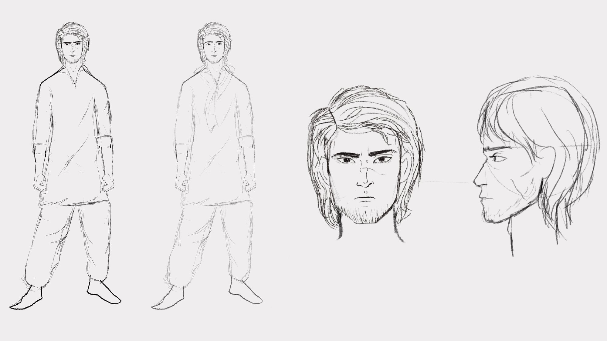
The Challenge
The hardest part was grounding a high concept, speculative narrative in reality. I grew up in Quetta and watched Hanna Lake dry up firsthand, so the story is built on real research too: interviews with Hayatullah Durrani, an environmentalist and founder of the Hayat Durrani Water Sports Academy, and Sikander Bizenjo, a development economist and Climate Reality Leader, both working on Balochistan's water crisis, plus reports from the UNDP and Pakistan's Council of Research in Water Resources. That's what let the myth carry real weight instead of just being invented.
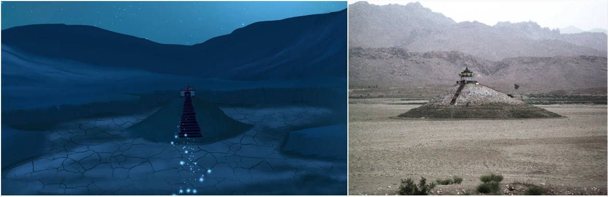
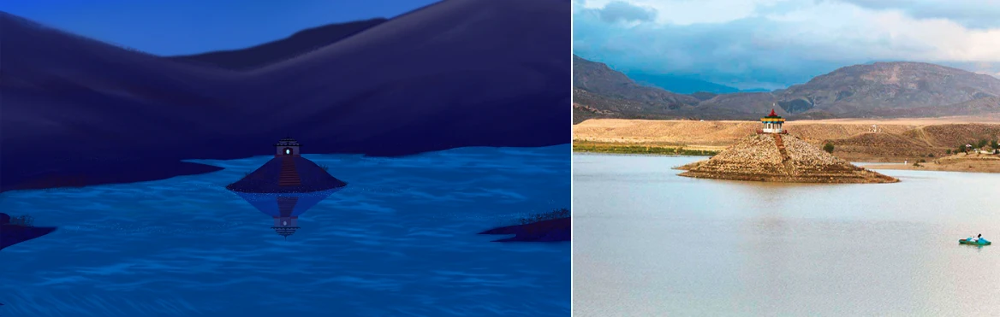
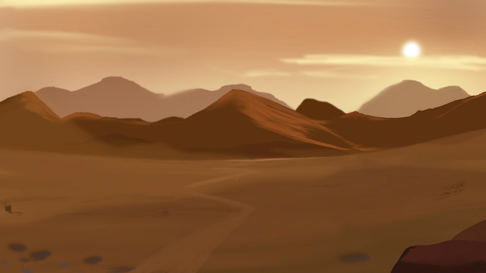
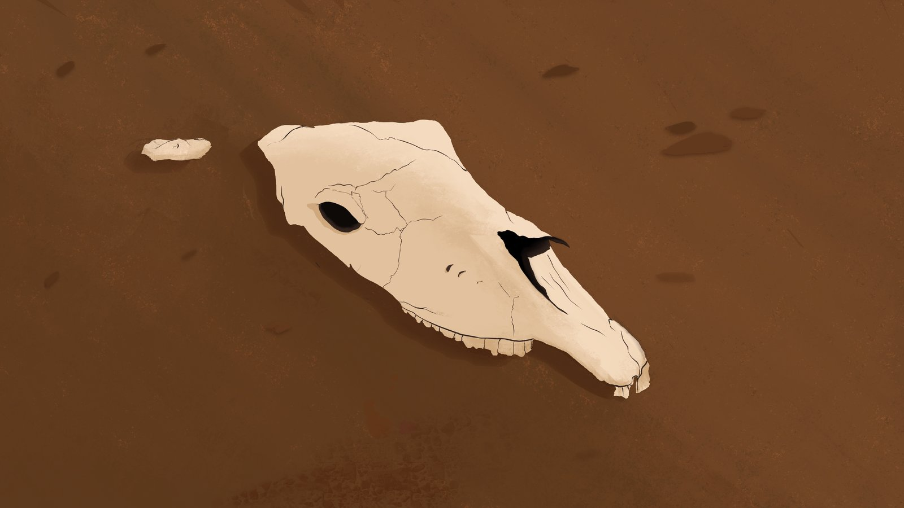
Idea to Finished Film
Five stages carried AQS from a rough idea to a finished piece, each one feeding the next. Most of it happened during COVID, so nearly all of it, including directing the voice actor, had to be done remotely.
01) Research & Interviews
Interviews with local experts, UNDP & PCRWR reports
02) Storywriting
Shahmir's journey, the spirit world's rules
03) Storyboarding
Every shot and beat, before final art
04) Illustration & Voice Direction
Procreate, scene by scene, while directing the voice actor remotely over email
05) Animation
After Effects: camera, particles, light
Gallery
A selection of frames from across the film.
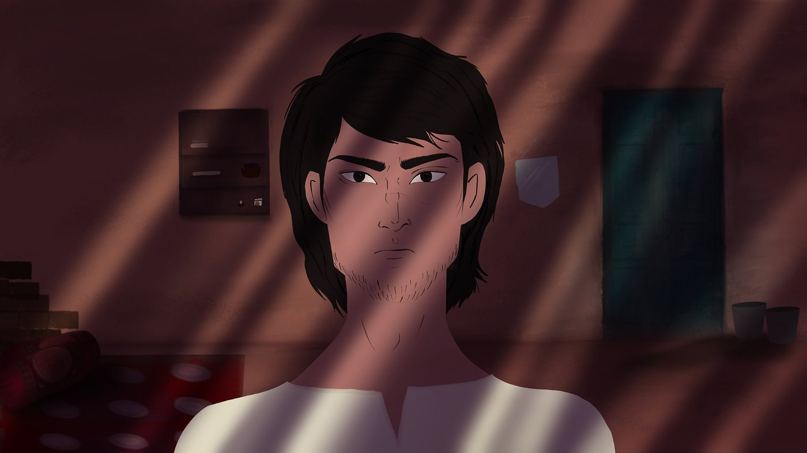
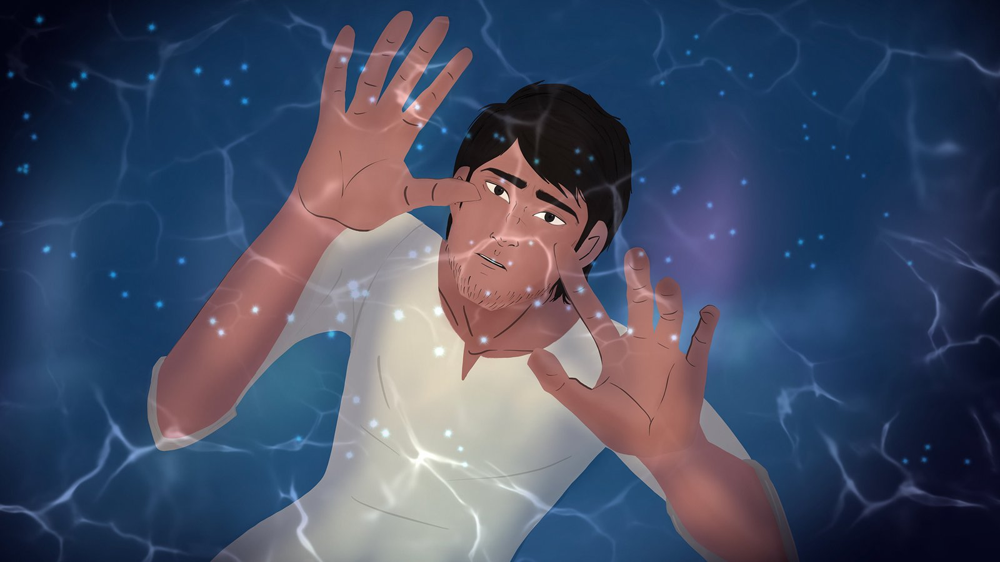
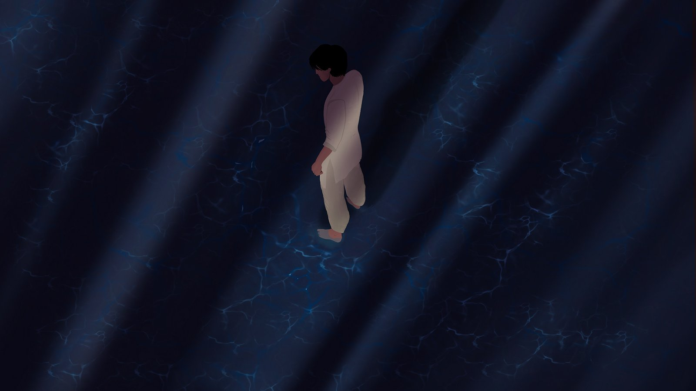
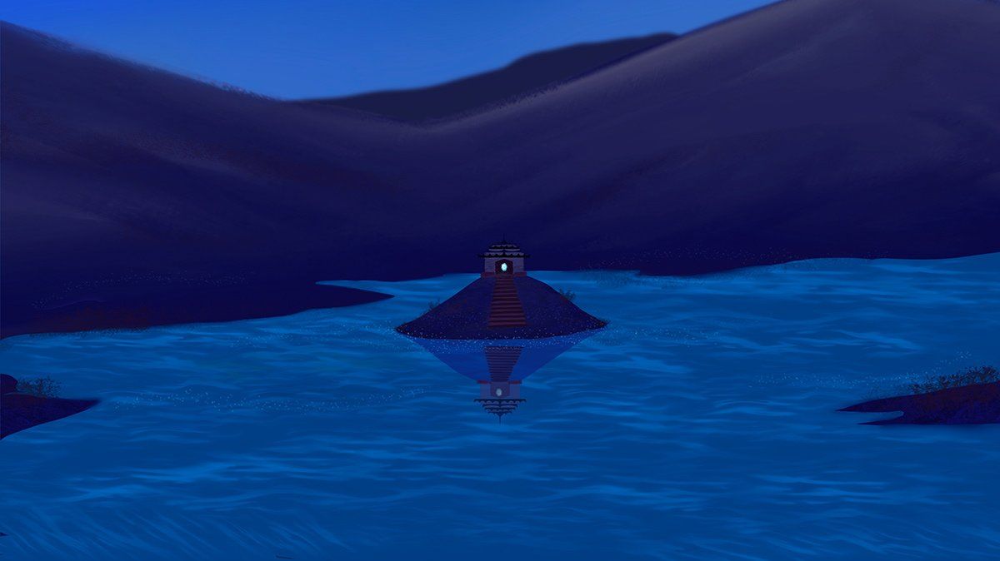
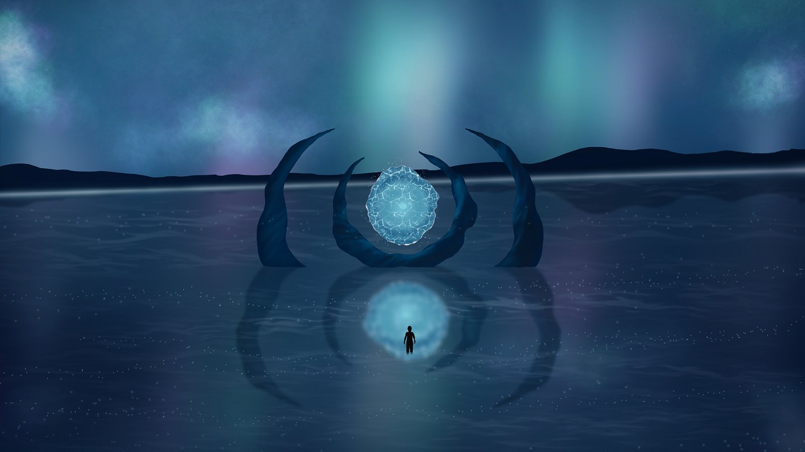
The Mark
The logo needed a local touch, so I experimented with Urdu type and circular forms until I found a shape that could carry the story's themes on its own. It leans on circles to represent both the water cycle and the broader cycle of life, a quiet echo of the word the whole project is named for: “Aqs” means reflection.
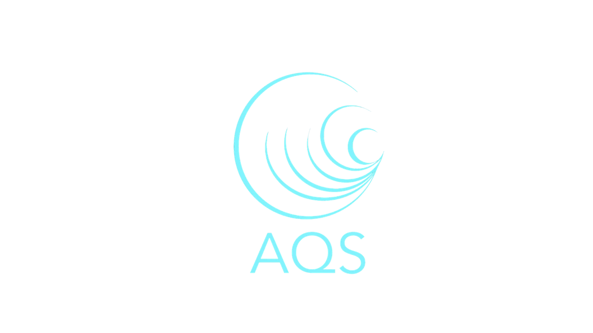
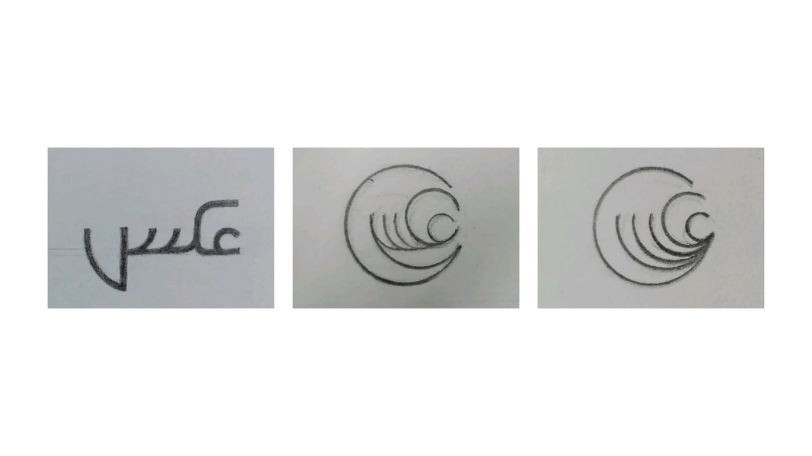
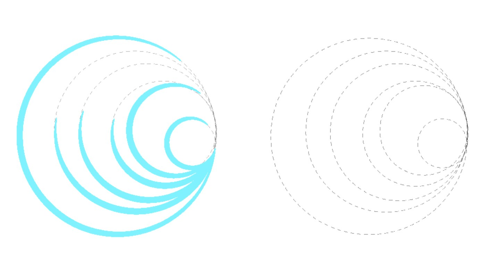
Pulled straight from the film itself: the spirit world's cyan glow, the deep navy of its night skies, and the sun bleached ochre and bone of the drought stricken land.
Outcome & Reflection
As a capstone project, AQS set out to show that motion graphics, film direction, and design research together can shift perspective. It's proof that design can be advocacy, not just decoration. Making the narrative both researched and felt was always the real goal, more than any single frame of it.